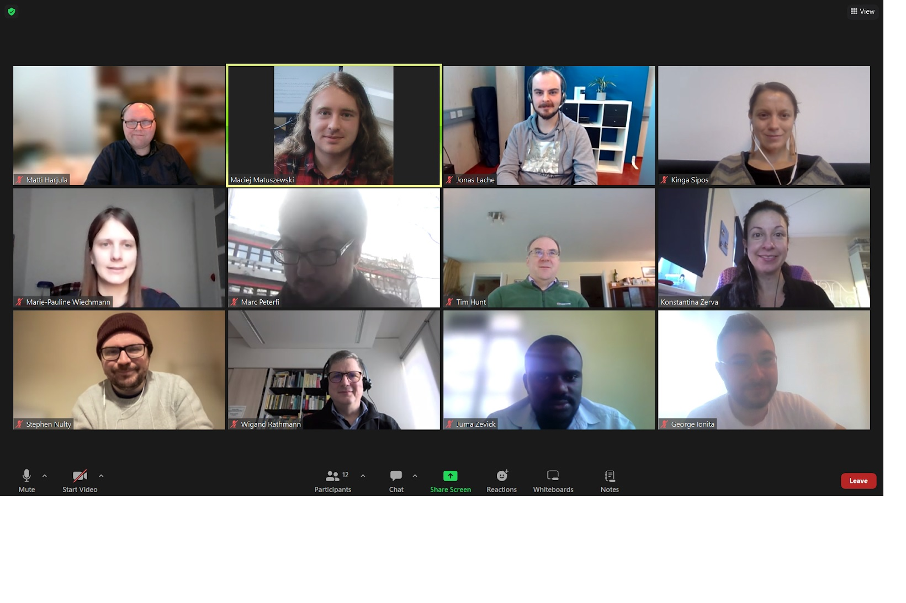

5th STACK Professionals Network meeting report, November 2023
The 5th STACK Professionals Network meeting took place on Thursday 30 of November 2023 online.
Present at the meeting
Marc Peterfi (MP), Jonas Lache, Konstantina Zerva (KZ), Matti Harjula (MH), Wigand Rathmann, Kinga Sipos, Marie-Pauline Wiechmann, Tim Hunt, Juma Zevick, Stephen Nulty, Maciej Matuszewski (MM), George Ionita.
Apologies: Tim Lowe, Chris Sangwin, Santiago Borio, Steffi Zegowitz.
Acknowledgements: Thanks to KZ for hosting and to MM for taking notes.

Agenda
- Welcome to new members and introductions
- Updates since last meeting
- Moodle LTI (if anyone knows)
- AOB
- Next meeting dates and host
Meeting Notes
1. Introductions:
All present introduced themselves briefly, outlining their institution and key role. New members were welcome.
2. Updates since last meeting
- New STACK 4.4.6 released in October. It was a bug-fix release. The next STACK version will get released at 11 of December (veryfied by Chris Sangwing after the meeting) and it will include a proof-builder drag and drop feature.
- The STACK demonstration site has not been updated yet – will be done soon.
- There will be a Greek Moodle Meet at the 8-9 of December in which KZ will speak at.
- There are potential plans for changing the Moodle question bank: https://moodle.org/mod/forum/discuss.php?d=452417. MH mentioned that this needs to account for the possibility of different instances of the same question using different seeds. *There may be issues with the latest version of STACK on ILIAS. For institutions that don’t use Moodle, it may be possible to set up an LTI connection to a Moodle server from whatever VLE/LMS is being used.
- There will soon be documentation on how to build complex graphs in JSXGraph: see here The current JSXGraph documentation can be found here
- Various people are working on using STACK with statistics. Probability theory and statistics tasks (German): https://moodle.ruhr-uni-bochum.de/course/view.php?id=56064
3. Moodle LTI
KZ asked a question about LTI connection between Learn Ultra and Moodle (4.1). The marks that come back to Learn are not the marks for each quiz. The LTI creates only one column in the Learn Ultra gradebook, where it gives the total mark for the course (the same issue existed with the previous LTI connection between old Learn and Moodle 3.9). TH mentioned the LTI Moodle forum (questions about LTI can be asked here): Moodle LTI forum
5. Next meeting
The next meeting will take place on Thursday 25th January. A poll will be send out for the exact time.